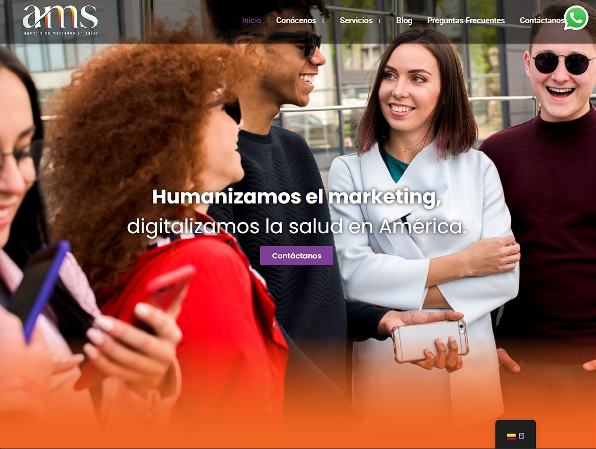

Proyectos Completados

Landing Page Médica
Diseño y desarrollo de una landing page optimizada para clínicas y servicios de salud.
Ver Proyecto
App de Citas UI/UX
Diseño centrado en el usuario para un sistema de agendamiento médico digital.
Ver Proyecto
Dashboard Interactivo
Diseño de interfaz funcional y atractiva para visualización de datos de usuarios.
Ver Proyecto